Tyre Model Fitting
The tire characteristic has a very strong impact on vehicle behaviour. For this reason, the vehicle model must include a precise tire model which fits the used tire attitude. Usually, the Pacejka model is used to describe the complete behaviour of the tire by means of a semi-empirical approach. Unfortunately, to extract all the Pacejka parameters - more than fifty -, some very expensive tests should be performed. Hence, to have a better data fitting vehicle model, some tests with the vehicle can be performed and the parameters of a simplified tire model can be fitted using the data from the tests. In this way, it is possible to have an approximation of the tire model that holds over certain assumptions. In other words, a simplified tire model can be used in order to have a less general but more data-fitting vehicle model. In this section, some simplified tire models are presented and discussed. Once the best model will be chosen, the fitting procedure is explained in detail, reporting the fitting results.
For all the tire model include here, the effects of the self-aligning torque are neglected. This because we have no way to measure them during the tests and, for this reason, the model notation results useless for our work.
Tire Model Definition
Burkhardt Friction Model
In the control algorithms, the Burkhardt model is usually used because it is simple and can be a good approximation of the real tire characteristic - ref. [19] -. This model uses an exponential function to approximate tire behaviour.
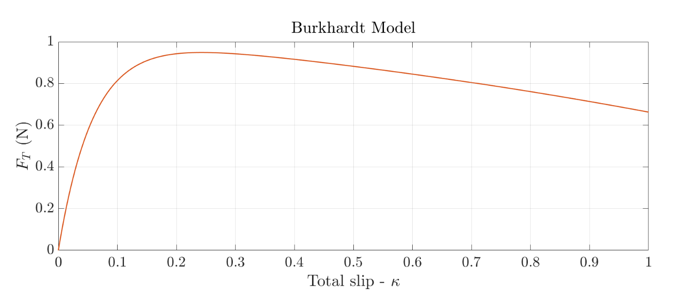
Figure 5: Burkhardt model
\(\kappa\) is the total slip and \(V\) is the vehicle velocity. The coefficients \(C_{i}\) are the model coefficients and give the shape of the curve. In order to compute the tire force, the friction coefficient has to be multiplied by the vertical load. Finally, to split the force in its longitudinal and lateral component, the resultant force must be scaled with the normalized longitudinal or lateral slip \(-\lambda / \kappa\) or \(\alpha / \kappa\)-. The model has to be fitted in both longitudinal and lateral direction to find \(\mu_{x}(\lambda, V)\) and \(\mu_{y}(\alpha, V)\). In the end, the tire model will be as follow.
This model has few parameters to find in order to fit the model: 8 for both longitudinal and lateral case - \(C_{i j}\) with \(i=\{1,2,3,4\}\) and \(j=\{x, y\}-\) - However, the part of this curve in which the slip is close to 1 has a decreasing fashion. This is in contrast with the real tire behaviour in which, after a certain value of slip, the force tends to stabilize around a constant value. Besides, real tire behaviour can be linearized before the peak using a linear function. In this model, this property is not represented because of the exponential function.
Semi-Empirical Tire Model
In the thesis of Fernández [8] a Semi-empirical brush model is presented and implemented in a 10 DoF vehicle model. This tire model partially solves the problems that the Burkhardt model has. Moreover, this model is built in order to have easyto-fit parameters, that can well approximate the real behaviour of the tire by means of a piecewise function. In this type of model, the combined behaviour is modelled by means of a circle. This is a strong simplification because the different friction coefficients depending on the force direction are neglected.
The term \(\psi\) indicates the working region of the tire: if \(\psi\) is smaller than one, the tire is working in linear region, otherwise, the tire is working above the peak. Using this distinction, the following piecewise definition can be written.
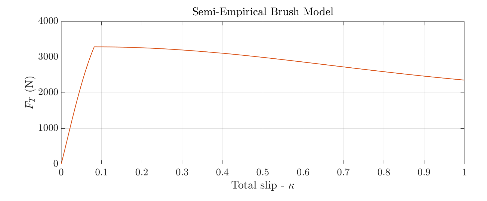
Figure 6: Semi-Empirical Brush model
The parameter \(F\), given by the equation 14. has to be multiply by the value of the slips to obtain the tire forces - longitudinal or lateral -.
The model parameters are \(C\), that is the normalized thread stiffness, and \(\mu\) and \(\mu_{v}\), which correspond to the static and kinetic friction coefficients between the road and the tire.
The semi-empirical brush model has a good accuracy in normal driving conditions, where the tire behaviour is linear. Nevertheless, the piecewise definition of \(F\) could give some numerical problems when the tire works around the peak. The advantage of this model is that it has very few parameters to estimate in order to have the complete model definition.
Magic Formula Tire Model
Both the Burkardt and the Semi-empirical brush model has some problems which make them difficult to use in a simulation environment. For this reason a new tire model is defined to be simple and easy to fit but also able to incorporate all the most important features of the tire characteristic. This model can be seen as a simplified version of the Pacejka one - version 96 - in which some of the contributes are neglected - for example, the contribute related to the camber is not modeled -.
The model is based on the Magic Formula theory that allows to model a very non linear effects using a fixed function, called magic formula, and scale the inputs and the outputs to fit the magic formula shape. In our case, the magic formula is defined in relation 16,
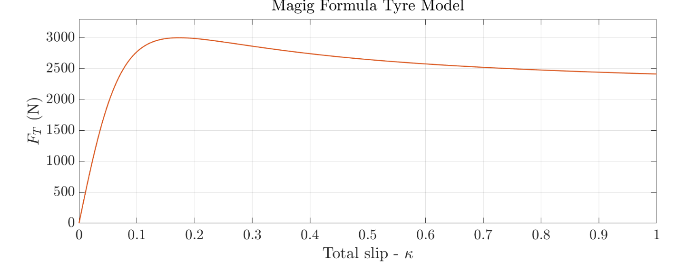
Figure 7: Example of Magic Formula
In expression 16, the term \(D\) corresponds to the peak value, the term \(B\) gives the initial slope of the curve and the term \(C\) is a shaping factor for the non-linear part. The term \(Y\) can be substituted with the tire forces \(F_{k}-k=\{x, y\}\) - and the term \(x\) with the tire slip \(s\), that can be longitudinal or lateral.
For what concerns the tire, the term \(D\) is the product of the friction coefficient \((\mu)\) and the vertical load \(\left(F_{z}\right)-D=\mu F_{z}\) - and \(\mu\) decreases linearly with \(F_{z}\). This is an important feature that must be included in the model. Usually, the contribute connected to \(F_{z}\) is modelled refereeing to a nominal vertical load \(F_{z 0}\). In this analysis, the nominal force is chosen equal to a quarter of the vehicle weight \(-F_{z 0}=M g / 4-\).
Focusing on the longitudinal or cornering stiffness, i.e. the initial slope of the characteristic curve, the behaviour is different for the longitudinal and lateral case:
- the longitudinal stiffness - \(K_{x k}\) - has a linear and an exponential part, functions of the vertical force \(F_{z}\)
- the lateral cornering stiffness - \(K_{y a}\)-, instead, is a trigonometric function of the vertical load and can be written as follow
The tire stiffness can be found looking at the magic formula definition: linearizing the formula around the origin, the longitudinal or cornering stiffness can be written as equal to \(K=B C D\). Using this last statement and considering the term \(C\) as a constant \(C=p_{C 1}-, B\) can be computed by inverting the linearized expression.
Finally, in order to consider also the coupled behaviour, the tire adherence condition can be represented through an approximation of the ellipse of adherence. This approximation derives from the fact that the total tire force has the same direction as the total slip. For this reason, the total force can be scaled using the normalized tire slip to find the longitudinal and lateral forces.
\(\kappa\) is the total slip \(-\kappa=\sqrt{\lambda^{2}+\alpha^{2}}-\). To sum up, the model parameters that have to be fitted are 11, 6 for the longitudinal and 5 for the lateral case - collected in table 8 -.
This model represents a strong simplification with respect to the complete Pacejka one. However, it is a good compromise between model reliability and simplicity, making the parameters estimable using the experimental tests.
| Case | \(\mu\) | \(K\) | Others |
|---|---|---|---|
| Longitudinal | \(p_{D x 1}, p_{D x 1}\) | \(p_{K x 1}, p_{K x 2}, p_{K x 3}\) | \(C_{x}\) |
| Lateral | \(p_{D y 1}, p_{D y 1}\) | \(p_{K y 1}, p_{K y 2}\) | \(C_{y}\) |
Table 8: Magic Formula - coefficients to fit
Longitudinal Model Fitting
The longitudinal tire model fitting is performed in acceleration condition. This because the longitudinal velocity estimation gives a more accurate results, reflecting in a more reliable slip computation, and the tire force, computed using the motor torque, are estimated in a more accurate way.
The longitudinal slips are computed using the sensor fusion longitudinal velocity \(u_{S F}\) and the forces are estimated using the SOSM technique. The manoeuvre used for the fitting are pure longitudinal tests - acceleration in our case -. Both the full-throttle and the double throttle-step are used.
The fitting procedure is firstly tested using the simulated data, in this way the results should be similar to the Pacejka model implemented in the simulation environment. Then, the fitting is applied to the real telemetry data.
Data Fitting from Synthetic Telemetry Data
The fitting procedure is performed via grey-box approach. A longitudinal tire model is built with the model parameters free to vary. The model takes as inputs the longitudinal slip and the vertical tire load and returns the longitudinal force that is compared with the estimated force from the telemetry data post-processing. The best matching corresponds to the best fitting parameters.
In order to govern the fitting and to have a physical validity of the fitted model, the parameters variation are bounded. For example, the peak value has to always decrease with the increasing of the vertical load hence, \(p_{D 2}\) has to be always negative.
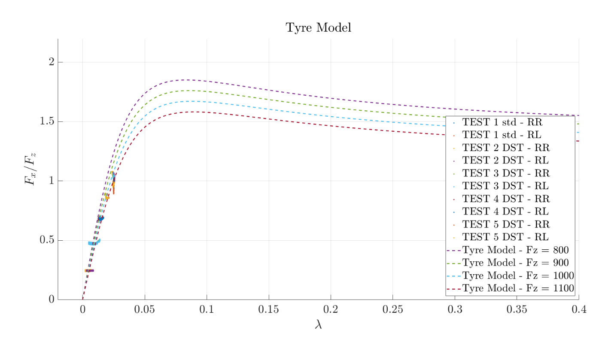
Figure 8: Fitting data and results for longitudinal tire model (Simulation case)
In figure 8 the data from the simulation and the fitted model are reported. As can be seen from the figure, the characteristic peak has never reached from the data-tests. For this reason, the peak position and the characteristic profile above the peak are estimated with a high level of uncertainty. This is confirmed by plotting the fitted model with the full Pacejka model implemented in the simulation environment - figures 9 and 10 -
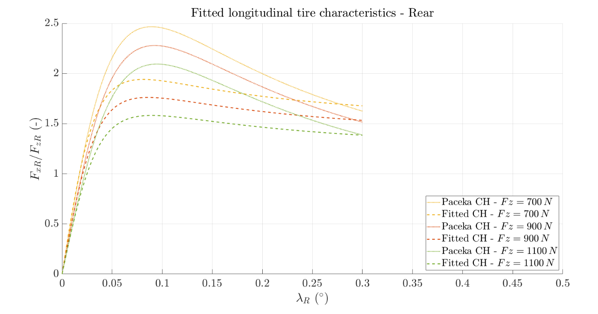
Figure 9: Longitudinal tire model comparison
Figure 10: Longitudinal stiffness and peak value comparison
In order to correct the peak value, the model can be refitted by fixing \(p_{D 1}\). However, to make this procedure possible, the actual value of the peak force must be known. In our case, \(p_{D 1}\) is set equal to \(2.45\). The new fitting results are reported in figures 11 and 12
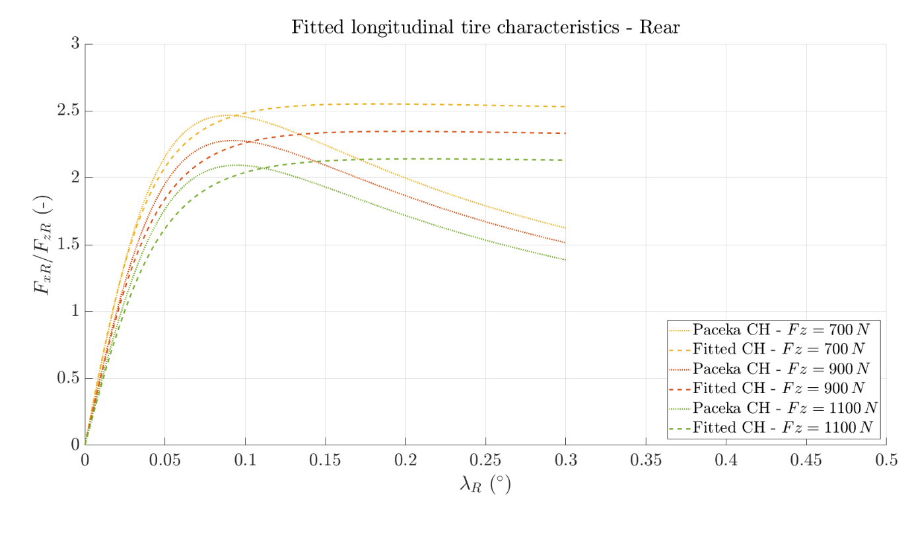
Figure 11: Longitudinal tire model comparison - fixing \(p_{D 1}\)
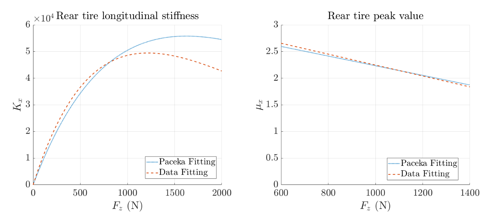
Figure 12: Longitudinal stiffness and peak value comparison - fixing \(p_{D 1}\)
From figure 11, it can be seen that the behaviour above the peak is not respected. This is due to an incorrect estimation of the parameter \(p_{C 1}\), which is caused by the missing of useful data in that characteristic region. Never the less, the behaviour of the tire until the peak is well estimated.
In table 9 the results of the two fitting procedures are reported. The static load \(F_{z 0}\) is set equal to \(802 N\).
| Case | \(p_{D 1}\) | \(p_{D 2}\) | \(p_{K 1}\) | \(p_{K 2}\) | \(p_{K 3}\) | \(p_{C 1}\) |
|---|---|---|---|---|---|---|
| First Fitting | \(1.852\) | \(-0.7178\) | \(59.0996\) | \(-0.5021\) | \(0.5996\) | \(1.4751\) |
| Fixing \(p_{D 1}\) | \((2.45)\) | \(-0.8206\) | \(57.1712\) | \(-1.3594\) | \(0.635\) | \(1.2065\) |
Table 9: Longitudinal fitting results (Simulation case)
Data Fitting from Real Telemetry Data
Also, using the real telemetry data the fitting technique follows the same grey-box approach followed using the synthetic data. Now, no-prior knowledge is given about the tire model hence we have to trust the fitting results.
In figure 13 the fitting results are illustrated. As can be seen, the peak is never reached. For this reason, the peak value is probably underestimated.
In table 10 the result of the fitting procedure is reported.
| \(p_{D 1}\) | \(p_{D 2}\) | \(p_{K 1}\) | \(p_{K 2}\) | \(p_{K 3}\) | \(p_{C 1}\) |
|---|---|---|---|---|---|
| \(1.0688\) | \(-0.4473\) | \(42.1562\) | \(-0.4934\) | \(0.3216\) | \(1.2042\) |
Table 10: Longitudinal fitting results
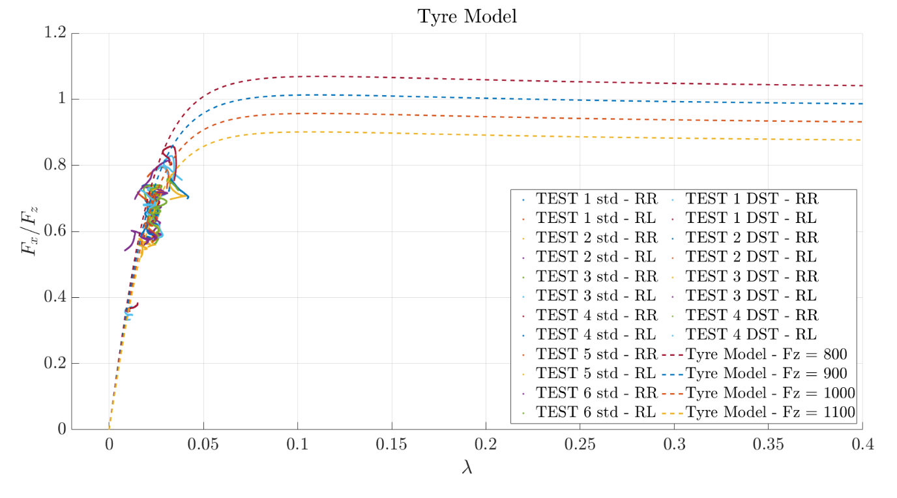
Figure 13: Fitting data and results for longitudinal tire model
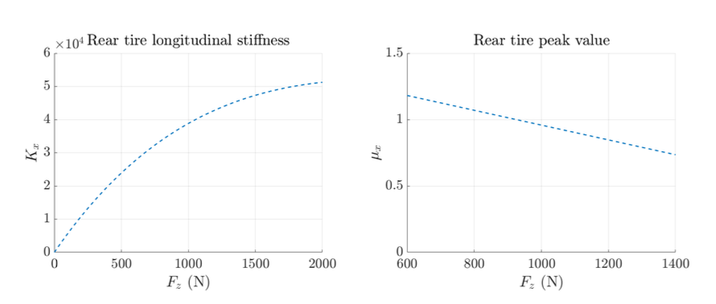
Figure 14: Cornering stiffness and peak value
Lateral Data Fitting
The lateral data fitting is a bit more challenging because the tyre forces are not available. However, the lateral slips and the vertical loads are given for all four wheels. Hence, the approach presented by Guiggiani [10] can be employed. The total front or rear lateral force is the sum of the left and right lateral forces that are a function of the same parameters and of the lateral slips and the vertical loads of the tires - relation 23 -. Using this definition of the total axle lateral force, the parameters can be fitted for the front and for the rear axle, taking as input the vertical load and the lateral slip of the wheels and computing the matching with the axle force.
where \(i=\{F, R\}\).
Also, in this case, both the fitting with synthetic and real telemetry data are presented. For the slip computation, the lateral velocity is computed using the Luemberger observer and the lateral forces by means of the SOSM. In the simulation, the performed tests are constant steering angle manoeuvre increasing speed while the real telemetry data are extracted from the steering pads.
Data Fitting from Synthetic Telemetry Data
In principle, the front and rear tire can have slightly different behaviour. For this reason, the fitting is performed separately for the front and the rear.
The complete model is fitted using the data. The results are reported in figures 15,16 and 17
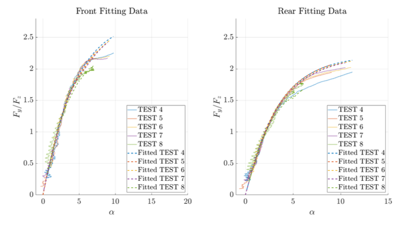
Figure 15: Lateral axle fitting results
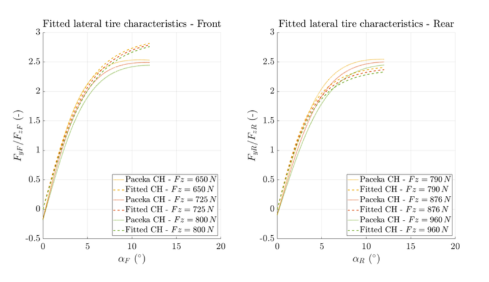
Figure 16: Lateral tire model comparison
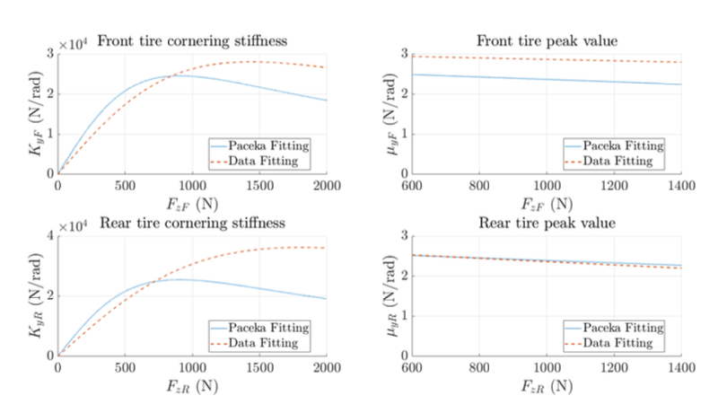
Figure 17: Cornering stiffness and peak value comparison
From the above figures, it can be noticed that the cornering stiffness does not follow the behaviour dictated by the complete Pacejka model. In order to solve this problem, both axles can be used for the fitting since, in simulation, the tire behaviour is almost the same - except for the camber effects -
Figures 18, 19 and 20 illustrates the fitting results in this case.
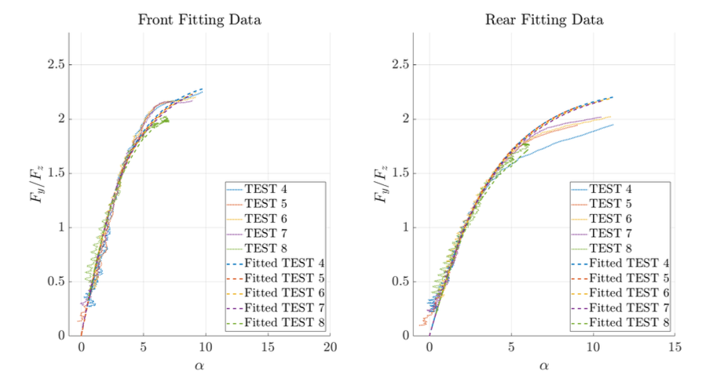
Figure 18: Lateral axle fitting results - using both axles
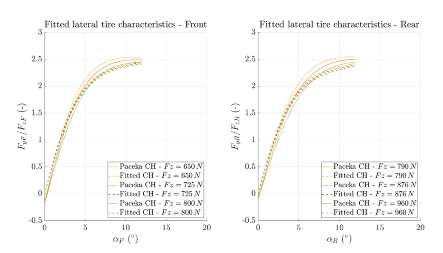
Figure 19: Lateral tire model comparison - using both axles
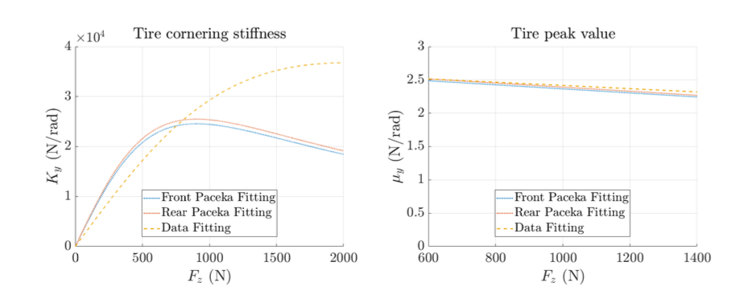
Figure 20: Cornering stiffness and peak value comparison - using both axles
In this case, the peak value of the lateral force is well recognizable from the saturation of the synthetic tests data. However, as can be seen in figure 20, the cornering stiffness behaviour is not well reproduced. The working region is probably too narrow in term of vertical load to fit this aspect of the tyre characteristic. Nevertheless, around the tire working region, the fitting results can still be a good approximation of the real tire behaviour.
| Case | \(p_{D 1}\) | \(p_{D 2}\) | \(p_{K 1}\) | \(p_{K 2}\) | \(p_{C 1}\) |
|---|---|---|---|---|---|
| First fit. (F) | \(2.9013\) | \(-0.1418\) | \(34.9586\) | \(1.7937\) | \(1.1720\) |
| First fit. (R) | \(2.4433\) | \(-0.3292\) | \(45.1309\) | \(2.2526\) | \(1.1694\) |
| Fit both axles | \(2.4658\) | \(-0.1958\) | \(45.8322\) | \(2.5119\) | \(1.1784\) |
Table 11: Lateral fitting results (Simulation case)
Data Fitting from Real Telemetry Data
The real telemetry data are extracted in hapless condition: the front wheels was a bit deflated with respect to the rear ones. This aspect changes completely the vehicle turning behaviour. For this reason, the front and the rear tire model have to be fitted separately in order to handle this undesirable effect.
The fitting outputs are reported in the below figures.
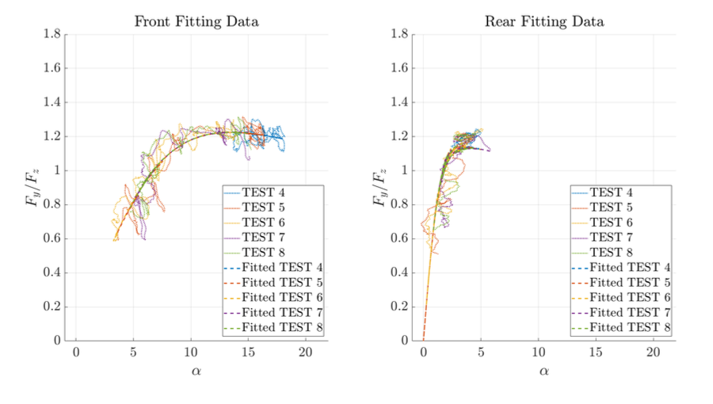
Figure 21: Lateral axle fitting results
From the telemetry data, it can be seen that, especially for the front axle, the linear tire region is poor of data. This is due to the unobservability of the Luemberger observer at a low yaw-rate: if the yaw-rate is small, the lateral force assumes small values and the tyre works in the linear region. Despite this, the lateral slip estimation is wrong and the fitting can not be performed. For this reason, the data are cut and only the data above a certain yaw rate are considered.
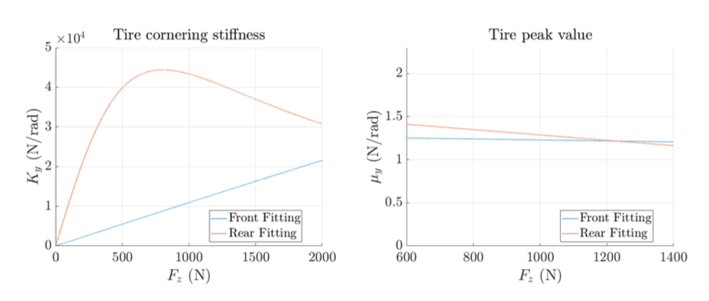
Figure 22: Cornering stiffness and peak value
Referring to figure 22, the different behaviour of the front and rear wheels is, for sure, caused by the different tire pressure. From this figure, the rear cornering stiffness has a behaviour with a shape close to the complete Pacejka one. For this reason, it is reasonable to assume that the cornering stiffness fitting returns a reliable behaviour. The same can be said for the peak value since the saturation limit of the characteristic is well distinguishable looking ad the data-test.
| Axle | \(p_{D 1}\) | \(p_{D 2}\) | \(p_{K 1}\) | \(p_{K 2}\) | \(p_{C 1}\) |
|---|---|---|---|---|---|
| Front | \(1.2404\) | \(-0.0455\) | \(109.503\) | \(19.992\) | \(1.851\) |
| Rear | \(1.3488\) | \(-0.2491\) | \(55.3888\) | \(1.0032\) | \(1.0017\) |
Table 12: Lateral fitting results
Tire Combined Behaviour
The pure longitudinal and lateral models have to be fused to have the effective longitudinal and lateral tire forces in combined condition. The friction condition must satisfy the ellipse of adherence constraint. In relation 22, a commonly used approximation of the ellipse of adherence is presented. In this section, this approach is compared with the full Pacejka formulation highlighting the main differences. However, it is important to remind that the models that we report here is built for two different types of tire. The full Pacejka formulation models the Hoosier 18x6-10 while, the tires mounted during the tests are LeCont 6x16-10.
For this analysis, the model fitted on the rear wheels is chosen to evaluate the performances of the combined behaviour. This because it has more similar characteristics with respect to the full Pacejka formulation and it is not affected by modelling errors due to wrong inflating conditions.
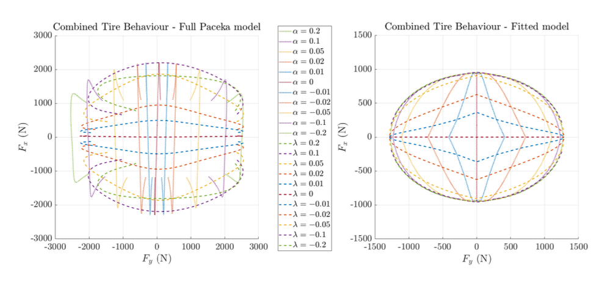
Figure 23: Tire combined behaviour
In figure 23, the combined tire behaviour is represented showing the evolution of longitudinal and lateral force in combined conditions under the effects of different level of slip.
The first thing that can be noticed is that the complete tire model (on the right) shows that at a high value of longitudinal force, the lateral force can still reach a large value, and vice-versa. In the simplified fitted model (on the left), instead, the longitudinal force tends to quickly decrease when a lateral contribute is introduced. This effect gives a square-like shape with the vertices on the pure conditions - figure 24-. Besides, an underestimation of the longitudinal peak, in the fitting case, can generate dangerous behaviour in the combined formulation making the ellipse of adherence more stretched in the lateral direction.
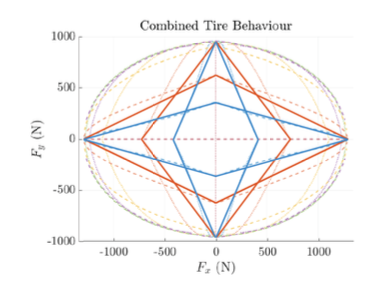
Figure 24: Fitted tire combined behaviour - approximation
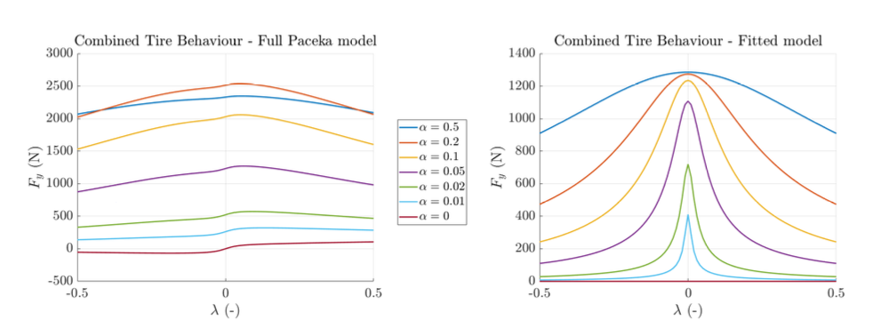
Figure 25: Effects of longitudinal slip on the lateral force
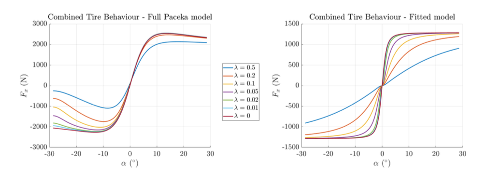
Figure 26: Effects of lateral slip on the longitudinal force
The effects of the combined condition can be also evaluated by looking at the effects of the longitudinal slip on the lateral force - figure 25 - or of the lateral slip on the longitudinal force - figure 26 -
Moreover, from these figures, it can be seen that the combined conditions can affect also the initial slope of the curves and their peak value. These effects are not completely considered in the simplified model that can suffer of these simplifications.
Nevertheless, this combined model offers a sufficiently good approximation of the real tire behaviour keeping the equations simple. Besides, a combination of the characteristic of this type does not need a dedicated fitting procedure, that can be done for the pure behaviour only.